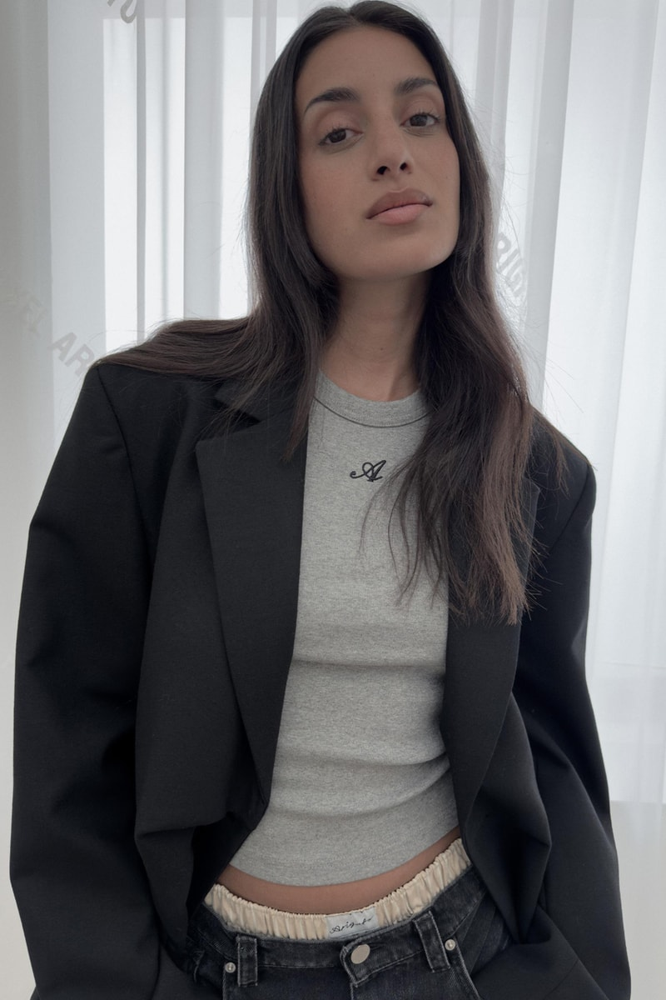
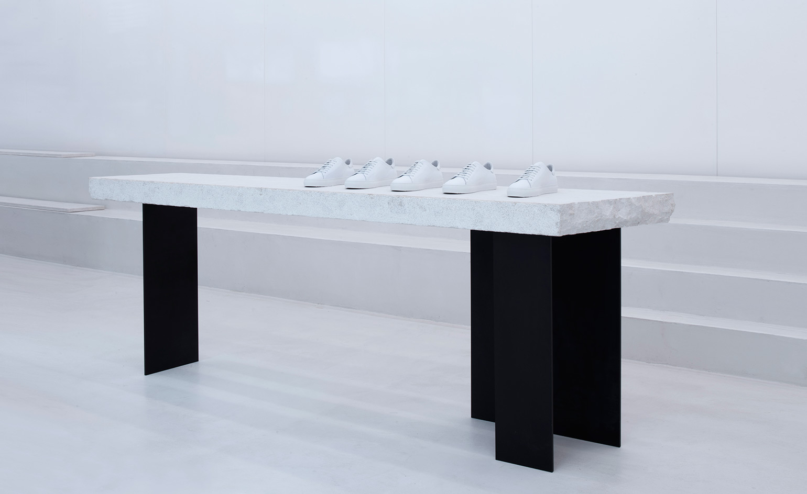
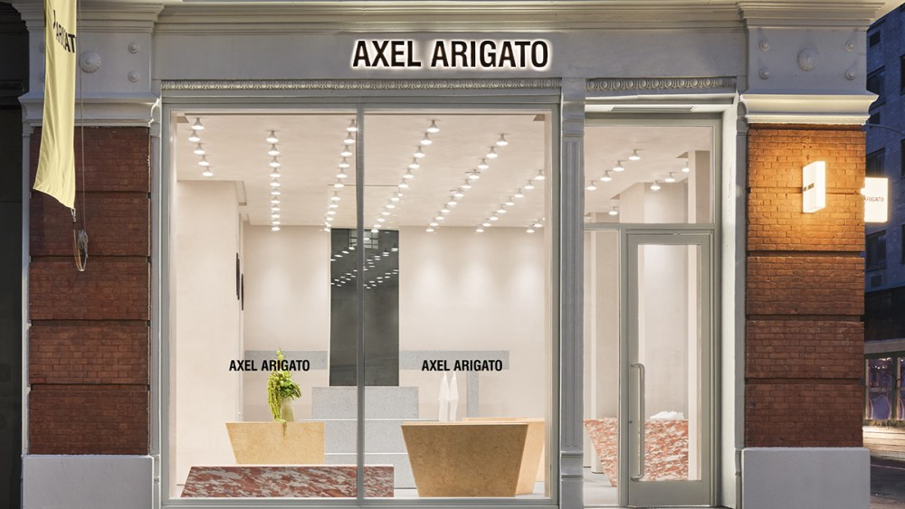
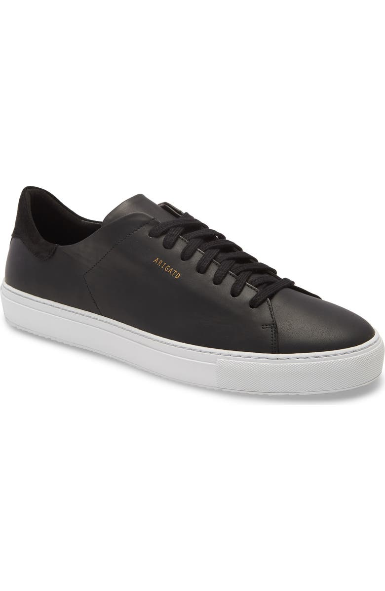
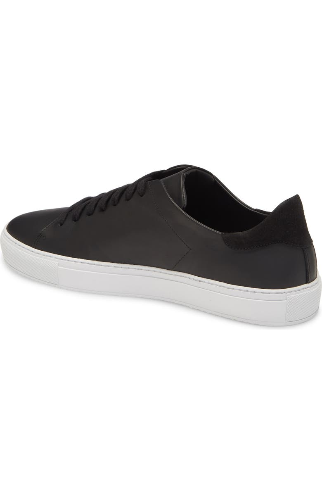
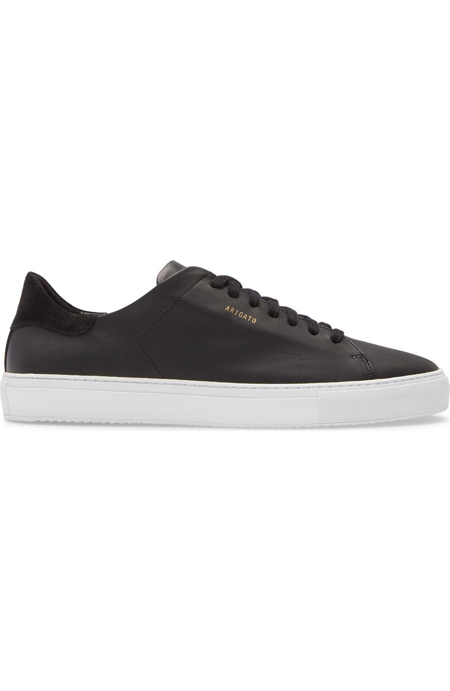
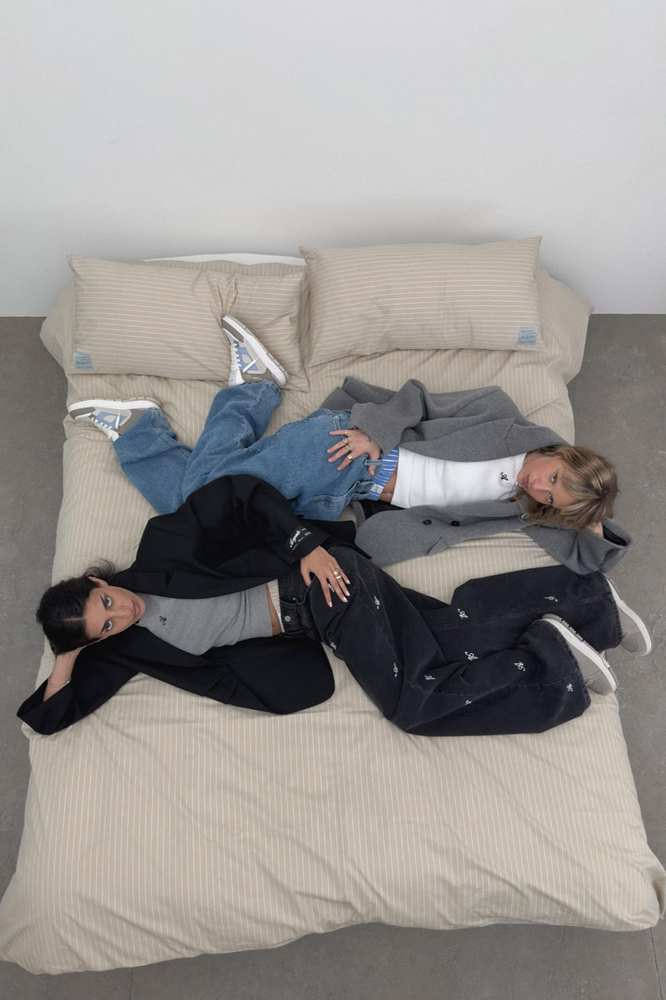
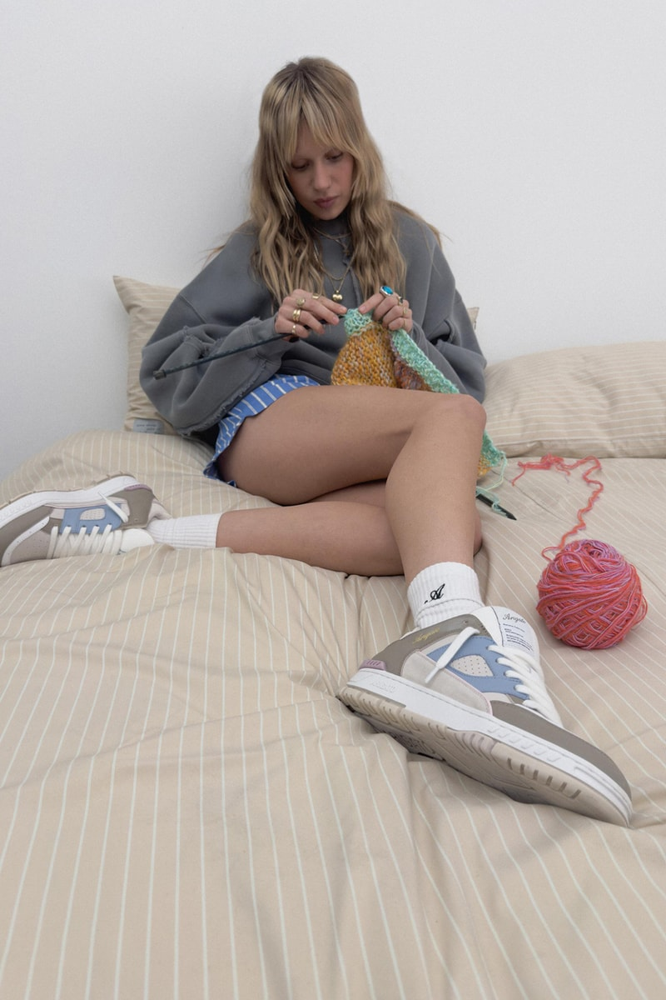

- One new style or colourway released every week — 52 drops per year instead of 2 seasonal collections
- Weekly drops create sustained demand for new product, reducing end-of-season inventory pressure relative to traditional seasonal launches
- Weekly drops drive repeat visits to axelarigato.com; online business is approximately 2× the size of the physical store business
- Listed on Farfetch, MyTheresa and SSENSE — platforms that serve the €200–430 contemporary luxury segment
- Platform selection positions the brand alongside peers in the accessible premium tier, reaching a fashion-aware global buyer without mass-market exposure
- Wholesale distribution through Harrods, Saks, Le Bon Marché, Nordstrom and Bloomingdale's — selective by retailer positioning, not volume
- Physical stores host events including music releases, cultural programming and pop-ups — functioning as community spaces alongside retail
- NYC flagship (1,200 sq ft) opened September 2024 — 10 years after launch, only after digital demand validated the market
- 17 stores, ships to 130 countries — physical scarcity amplifies digital brand value
Axel Arigato was founded in 2014 in Gothenburg, Sweden by Albin Johansson and Max Svärdh. Both grew up in Gothenburg as sneakerheads and identified a gap in the market: premium sneakers were either inaccessible luxury or uninteresting mass-market product. The founding premise was to disrupt the price ceiling without compromising quality or design.
The name Axel Arigato was chosen to represent a mythical figure intended to outlive the founders — a brand identity rather than a founder-personality vehicle. The brand launched online-only, using direct-to-consumer digital channels from day one rather than seeking traditional wholesale distribution. This positioning — quality at €200–400 rather than €600–1,200 — placed Axel Arigato squarely in the contemporary luxury segment, above mainstream sportswear but below heritage luxury houses.
Footwear is made in Portugal using premium Italian materials. This production structure kept quality high while enabling pricing competitive with the top of the accessible premium tier. The brand's Scandinavian minimalist aesthetic — refined, restrained, technically informed — defined the visual identity from the outset.
Swedish company filings (Bolagsverket) and investor communications confirm steady revenue growth across all channels. In 2020, sales grew 60% year-on-year and the brand recorded 92% growth across online, retail and wholesale channels during the pandemic period. The Eurazeo investment in late 2020 provided capital to accelerate retail rollout and expand into new markets. FY2025 accounts are not yet filed (Swedish deadline: six months after year-end).
2019 — Inside Retail Asia, Oct 2024 (CEO interview: "€19M in 2019")
2021 projection — WWD, May 2021 (stated as $60M USD; converted at 2021 avg EUR/USD 1.18 = ~€51M)
2023 & 2024 — ehandel.com, May 2026 (citing Axel Arigato AB 2024 annual report: SEK 921M for 2024, SEK 884M for 2023, operating profit SEK 17.4M)
EUR approximations for 2023–24 use annual avg EUR/SEK rates (2023: 11.47; 2024: 11.52).
FY2025 accounts — expected at Bolagsverket (Swedish Companies Registration Office) by June/July 2026 (statutory deadline: 6 months after year-end).
Key inflection point: 2020 saw a 60% revenue increase year-on-year. The brand's digital-first foundation meant it was not exposed to the footfall collapse that hit mono-channel competitors. The Eurazeo investment in late 2020, valuing the business at €56M for a majority stake, provided the capital to accelerate retail rollout and invest in digital infrastructure. In January 2024, the brand was described as tracking toward €100M by end of year (Modern Retail). Actual 2024 revenue per the annual report was SEK 921M (~€80M), with operating profit of SEK 17.4M (~€1.5M).
The retail rollout followed a deliberate sequence: digital-first in all markets, then own-store physical presence in cities with proven digital demand. The brand now operates 17 stores globally (11 standalone and outlet stores + 6 department store concessions) and ships to 130 countries via its e-commerce platform.


Photos: Wallpaper* (London) · WWD (New York)
| Market | Stores | Key Locations |
|---|---|---|
| Standalone & Outlet Stores — 10 locations | ||
| United Kingdom | 3 | London Soho, Broadwick St (flagship, 2016); London Covent Garden, Earlham St (opened July 2024); Bicester Village (outlet, 2023) |
| Sweden | 2 | Stockholm, Biblioteksgatan 7; Gothenburg, Södra Larmgatan 7 |
| France | 2 | Paris, Rue Vieille du Temple 86 (flagship, 2021); La Vallée Village, Serris (outlet) |
| Denmark | 1 | Copenhagen, Pilestræde 30A |
| Germany | 1 | Berlin, Neue Schönhauser Strasse 1 |
| USA | 1 | New York City, Soho, 273 Lafayette St (opened September 2024 — first US store) |
| Department Store Concessions — 6 locations | ||
| Sweden | 3 | NK Stockholm Men's; NK Stockholm Women's; NK Gothenburg |
| Germany | 3 | KaDeWe Berlin Men's; KaDeWe Berlin Women's; Alsterhaus Hamburg |
| UAE | 1 | Dubai, Mall of the Emirates (opened September 2025, via Chalhoub Group — 11th standalone store). Abu Dhabi and Jeddah planned. |
| Total (current) | 17 | 11 standalone/outlet stores + 6 department store concessions. Modern Retail reported 16 as of September 2024 (before Dubai). |
Axel Arigato launched as an online-only brand and the digital channel has remained its primary revenue driver. As of 2024, the online business is approximately double the size of its physical store business — a channel split that inverts the typical pattern for brands at this stage of store rollout. This ratio reflects both the strength of the digital brand and the still-early phase of global retail expansion.
The brand operates across three distinct digital distribution channels, each serving a different consumer profile and margin structure:
The three-channel digital structure — own.com / luxury marketplaces / wholesale digital — requires different commercial levers and KPIs. Own.com optimises for conversion rate, average order value, and repeat purchase. Luxury marketplace management optimises for sell-through rate, stock allocation, and net revenue after platform fees. Wholesale digital (Harrods online, Nordstrom.com) sits at the intersection: brand exposure with downstream margin compression.
The brand's decision to list on Farfetch, MyTheresa, and SSENSE — rather than, for example, ASOS or Zalando — is a deliberate positioning signal. All three platforms are strongly indexed to the luxury and contemporary luxury buyer, reinforcing the price tier and brand positioning that Axel Arigato occupies.
Axel Arigato's founding principle was to eliminate unnecessary wholesale costs and sell directly to consumers — a structure that was uncommon in European premium footwear in 2014. The brand built its e-commerce platform and community first, then used that data and demand signal to open own stores and negotiate wholesale from a position of proven brand equity.
This sequencing — digital first, then physical, then selective wholesale — is the inverse of the traditional luxury brand playbook (wholesale first, then retail, then reluctant DTC). The practical consequence: Axel Arigato controls its own customer data, sets its own pricing, and is not structurally dependent on any single wholesale account. Wholesale is additive brand exposure rather than a revenue lifeline.
| Channel type | Role in the model | Key partners / platforms | Strategic rationale |
|---|---|---|---|
| Own DTC online | Primary revenue; full margin; customer data ownership | axelarigato.com — ships to 130 countries | Drop-of-week model drives CRM; no markdown dependency |
| Own stores | Brand experience; community events; local conversion | 17 stores, 7 countries | Event-driven retail — launches, jazz, DJ sets — not transactional footfall |
| Luxury marketplaces | Extended reach; brand positioning at right tier | Farfetch, MyTheresa, SSENSE | Platform indexing reinforces €200–400 contemporary luxury positioning |
| Prestige wholesale | Brand visibility in key doors; lower direct margin | Harrods, Saks, Nordstrom, Le Bon Marché, Bloomingdale's, Galeries Lafayette | Selective — confirmed partners include Harrods, Saks, Nordstrom. Wholesale as brand amplifier |
February 2026 marked the most significant leadership transition in Axel Arigato's history. Co-founder Albin Johansson stepped down as CEO and moved to Chairman of the Board. Co-founder Max Svärdh had already stepped back as Creative Director, succeeded by Jens Werner (joined 2021, previously head of ready-to-wear) in 2024. The appointment of Frédéric Serrant — 16 years at Adidas, most recently as Managing Director of the Asia-Pacific business — as incoming CEO signals a shift from founder-led scaling to institutionally-backed global growth.
Serrant's APAC experience is directly relevant: the brand's Middle East entry (UAE 2025, with Abu Dhabi and Jeddah planned) and anticipated further US and Asian expansion require a different commercial operating model than the European-centric phase that the founders built. The transition combines founder-era brand equity with the operational infrastructure experience of a company that has run global distribution at scale.
Axel Arigato occupies the contemporary luxury tier of footwear — above mainstream sportswear (Nike, Adidas) and below heritage luxury (Common Projects, Loro Piana). Core sneaker pricing runs from approximately €210 for entry models (Clean 90) to €380–430 for technical runners (Marathon Runner). Apparel ranges from approximately €170 for knitwear to €610 for outerwear.



Clean 90 — entry price point, highest volume DTC seller · Photos: Nordstrom
| Category | Key Products | Price range | Notes |
|---|---|---|---|
| Footwear — Core | Clean 90, Genesis | ~€210–290 | Entry price point; highest volume; DTC bestsellers |
| Footwear — Technical | Marathon Runner, Squish, Catfish | ~€330–430 | Technical running-inspired; new Squish silhouette under Jens Werner |
| Apparel | Outerwear, knitwear, denim, RTW | ~€170–610 | Category expanded from 2021; women's RTW launched fall 2021 |
| Accessories | Bags, hats, lifestyle | ~€80–220 | Extending lifestyle positioning beyond footwear |
Production is in Portugal using premium Italian materials — a positioning used consistently in brand communications as evidence of quality-to-price credibility. The brand runs a weekly product drop (one new style or colourway per week) rather than traditional bi-annual seasonal collections. This model sustains ongoing editorial conversation, drives DTC traffic, and avoids the markdown pressure of seasonal clearance cycles.
The XChange resale programme — a pre-loved product exchange — addresses the brand's sustainability positioning and captures secondary market value before it migrates to third-party resale platforms. This is increasingly standard among premium sneaker brands competing for the sustainability-aware consumer segment.


FW24 "An Infinite Dream" campaign · Photos: Hypebeast / Axel Arigato
Axel Arigato raised its first external capital from Vaultier7, a UK-based venture firm, at approximately SEK 35M (~$7.5M). The transformative funding event was Eurazeo Brands taking a majority stake in late 2020 for €56M ($66.1M). Eurazeo Brands is the global investment firm's fashion and lifestyle vehicle, with a portfolio focused on premium and contemporary brands in the digital and physical retail space. Total funding raised stands at $74M across both rounds.
Eurazeo's stated investment thesis at the time of the 2020 deal: invest in digital and e-commerce capabilities, develop retail footprint in major European cities, and enhance sustainability positioning. All three objectives have been substantially executed: 16 stores are now open, the e-commerce channel is approximately double the physical channel, and sustainability is embedded in materials and resale.
The February 2026 CEO appointment marks the transition into a post-investment scaling phase. With a former Adidas APAC executive as CEO and the founders at board level, the governance structure is now oriented toward institutional growth — US market development, Middle East channel build, and potential further markets in Asia — rather than the founder-operated European scaling that characterised 2014–2025.